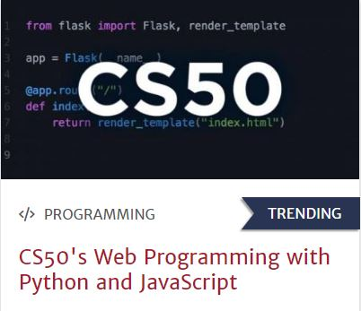

About Me
why this course??
I was always facinated by these fancy looking websites of the big firms, they looks so elegent and user friendly. As I grew up i started understanding what it takes to create these websites. Then I learnt that it involves designing and coding, Thus when I heard about this course, I was very intrested and wanted to persue this coures. So now I am here finally creating my first website through HTML and CSS from the learnings of this course.
Family
As mentioned earlier I am studying in GITAM,Vizag so I stay in the university's hostel. While my father is a software engineer working for TATA Elxsi,Bangalore. Bangalore thats where i had studied till 12th grade living with my parents. My mother is a house wife and I also have a younger sister,who is studying her 10th grade at Sri Chaitanya Techno School,Banglore.
Studies
From my play school till 5th grade I had studied in Ryan international school. Later from my 6th grade till my 10 grade i had studied in Sri Chaitanya techno school (the one where my sister is currently studying). Thanks to Chaitanya I was able to score 10/10 CGPA in my 10th. Later i joined Sri chaitanya PU college,Bangalore for my 11th and 12th grade. After all the hard work of these two years I got a seat in GITAM university,Vizag. Where in I am persueing B.Tech in Computer Science engineering course.Since when I was a kid I was an avarage student and still am the sam old avarage student who studies just the weeak before the exams.